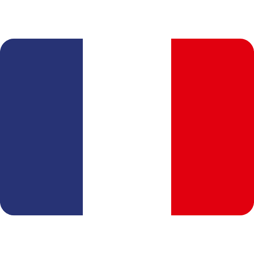
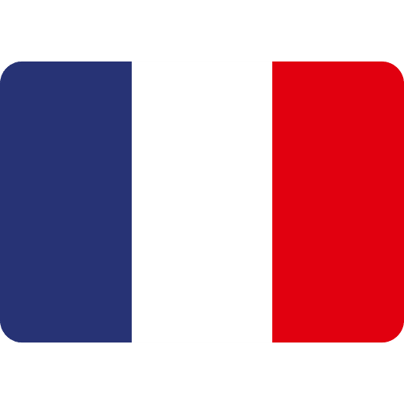

Dopo l'incontro col batterista e producer Franco Pellicani, grazie al lavoro di Gioconda Rea girano i video di Eyaye e Kone Fassa, disponibili ora su YouTube.
La band sta arrangiando il suo primo disco ed è reperibile per concerti e festival.
Mail per contatti: musicdoncan@gmail.com
After having met Franco Pellicani, drummer and producer, the videos of Eyaye and Kone Fassa, now on YouTube, were shot by Gioconda Rea.
The band is arranging its first album and is available for concerts and festivals.
Mail us at: musicdoncan@gmail.com
De la rencontre avec le batteur et producteur Franco Pellicani ont été tournées les vidéos d'Eyaye et Kone Fassa, disponibles sur YouTube grâce au travail de Gioconda Rea.
Le groupe est en train d'arranger son premier album et est disponible pour des concerts et festivals.
Email pour les contacts: musicdoncan@gmail.com